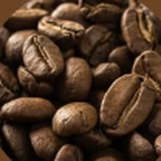
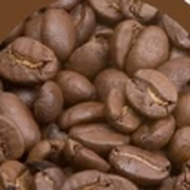
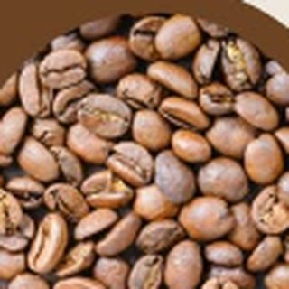
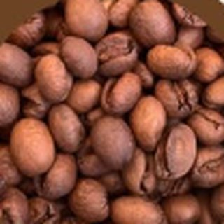

Clássico
Torra média
- ApresentaçãoMoído ou em grãos
- Notaschocolate amargo
- Grão100% arábica
Café gourmet em grãos ou moído, com grãos selecionados diretamente da Região das Matas de Minas. Uma experiência de qualidade para quem aprecia café de verdade.
Café gourmet selecionado
No Cafézin Especial, acreditamos que um bom café transforma pequenos momentos em experiências especiais.
Por isso, selecionamos nossos grãos diretamente da Região das Matas de Minas, reconhecida pela tradição e qualidade na produção de cafés.
Você escolhe como prefere apreciar: moído ou em grãos, sempre buscando entregar uma experiência marcante em cada xícara.
Atendimento em Primavera do Leste – MT, direto pelo WhatsApp.
Quatro cafés 100% arábica, todos disponíveis moídos ou em grãos. Deslize para conhecer cada um.

Torra média

Torra média

Torra clara

Torra clara
O método coado, no filtro de papel ou de pano, realça o aroma e a doçura dos nossos grãos. Use a calculadora para acertar a medida conforme o número de xícaras.
Quantas xícaras?
*Aproximado. Proporção de referência: 10 g de café para 100 ml de água. Ajuste ao seu gosto.
Ferva a água e aguarde cerca de 1 minuto. A temperatura ideal fica entre 92 °C e 96 °C, logo abaixo da fervura.
Molhe o filtro de papel com um pouco de água quente e descarte essa água. Isso tira o gosto de papel e aquece o recipiente.
Coloque o café moído no filtro na medida indicada acima. Para o coado, prefira uma moagem média, parecida com açúcar cristal.
Despeje um pouco de água só para umedecer o pó e espere 30 segundos. O café vai inchar e liberar gases, o que melhora a extração.
Adicione o restante da água aos poucos, em movimentos circulares do centro para fora, mantendo o pó sempre coberto.
A extração leva cerca de 3 a 4 minutos no total. Sirva assim que terminar de passar, para aproveitar o aroma no auge.
Seleção cuidadosa para oferecer uma experiência de café diferenciada.
Grãos selecionados diretamente da Região das Matas de Minas.
Você escolhe a forma ideal para preparar o seu café.
Um café pensado para quem valoriza sabor, qualidade e bons momentos.
Fale diretamente conosco pelo WhatsApp e tire suas dúvidas antes de comprar.
Comprar é simples: você escolhe, chama no WhatsApp e combina a entrega.
Veja as opções disponíveis e escolha entre moído ou em grãos.
Fale conosco de forma rápida e direta.
Consulte disponibilidade, valores, entrega ou retirada em Primavera do Leste.
Você pode escolher entre café gourmet moído ou em grãos.
Nossos grãos são selecionados diretamente da Região das Matas de Minas.
Sim. O Cafézin Especial atende Primavera do Leste – MT. Consulte pelo WhatsApp as condições de entrega ou retirada.
É simples: clique no botão do WhatsApp e fale diretamente conosco.
O café gourmet passa por uma seleção mais criteriosa dos grãos, o que costuma resultar em uma bebida com aroma mais marcante, sabor equilibrado e menos amargor do que o café tradicional.
Mantenha a embalagem bem fechada, em local seco, fresco e longe da luz. Evite guardar na geladeira e consuma preferencialmente em poucas semanas após abrir.
Claro. Nosso atendimento pelo WhatsApp está disponível para ajudar você a escolher o café que mais combina com o seu gosto.
Conheça o Cafézin Especial e descubra um café gourmet selecionado para transformar sua rotina em momentos ainda mais especiais.
Quero meu Cafézin Especial Fale conosco pelo WhatsApp e faça seu pedido.